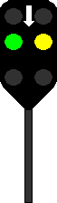

(1) Anwendung
Haupt- und Vorsignalverbindungen sind nur bei Stadtschnellbahnen auf eigenem Bahnkörper (S-Bahnen) vorhanden.
Signalbuch-Online
Haupt- und Vorsignalverbindungen (Sv)
Übersicht und Erklärungen zu den Haupt- und Vorsignalverbindungen bei Stadtschnellbahnen (S-Bahnen).
Signallichter
Eine Haupt- und Vorsignalverbindung ist ein Lichtsignal besonderer Art, das Haupt- und Vorsignal auf einem Signalschirm nebeneinander vereinigt.
Die linken Lichter entsprechen den Hauptsignalbildern Hp 0, Hp 1 oder Hp 2 und geben an, ob der anschließende Gleisabschnitt von einem Zug befahren werden darf. Die rechten Lichter entsprechen den Vorsignalbildern Vr 0, Vr 1 oder Vr 2 zu dem am nächsten Sv-Signal leuchtenden Hauptsignalbild.
Die linken Lichter entsprechen den Hauptsignalbildern Hp 0, Hp 1 oder Hp 2 und geben an, ob der anschließende Gleisabschnitt von einem Zug befahren werden darf. Die rechten Lichter entsprechen den Vorsignalbildern Vr 0, Vr 1 oder Vr 2 zu dem am nächsten Sv-Signal leuchtenden Hauptsignalbild.
(2) Standort
Die Signale können sich rechts oder links neben oder über dem Gleis befinden.
(3) Sv-Signale wiederholt
Wo die Sicht auf Sv-Signale behindert ist, können die den Vorsignalbildern entsprechenden Lichter wiederholt sein (Vorsignalwiederholer).
Die Signale sind dann durch ein links angeordnetes weißes Zusatzlicht kenntlich.
Die Signale sind dann durch ein links angeordnetes weißes Zusatzlicht kenntlich.
(4) Sv-Signale im verkürzten Abstand des Bremsweges
Signale (ausgenommen Sv 0), die in einem um mehr als 5% kürzerem Abstand als dem erforderlichen Bremsweg vor dem folgenden Signal stehen, sind durch einen weißleuchtenden Pfeil über den Signalbildern kenntlich.

Zulässige Geschwindigkeit an Signalen Sv 4, Sv 5 und Sv 6
(1) Allgemein
Die Signale Sv 4, Sv 5 und Sv 6 (bzw. Sv 6) schreiben eine Geschwindigkeitbeschränkung auf 40 km/h vor, wenn nicht eine abweichende Geschwindigkeit durch ein Signal Zs 3 angezeigt wird.
Die gezeigte Geschwindigkeitbeschränkung ist vom Signal ab im anschließenden Weichenbereich einzuhalten.
(2) abweichende Geschwindigkeiten
Der Infrastrukturunternehmer kann andere abweichende Geschwindigkeiten bekannt geben.
Bei den Eisenbahnen des Bundes werden andere abweichende Geschwindigkeiten im Fahrplan oder in der La angegeben.
Die Signale Sv 4, Sv 5 und Sv 6 (bzw. Sv 6) schreiben eine Geschwindigkeitbeschränkung auf 40 km/h vor, wenn nicht eine abweichende Geschwindigkeit durch ein Signal Zs 3 angezeigt wird.
Die gezeigte Geschwindigkeitbeschränkung ist vom Signal ab im anschließenden Weichenbereich einzuhalten.
(2) abweichende Geschwindigkeiten
Der Infrastrukturunternehmer kann andere abweichende Geschwindigkeiten bekannt geben.
Bei den Eisenbahnen des Bundes werden andere abweichende Geschwindigkeiten im Fahrplan oder in der La angegeben.